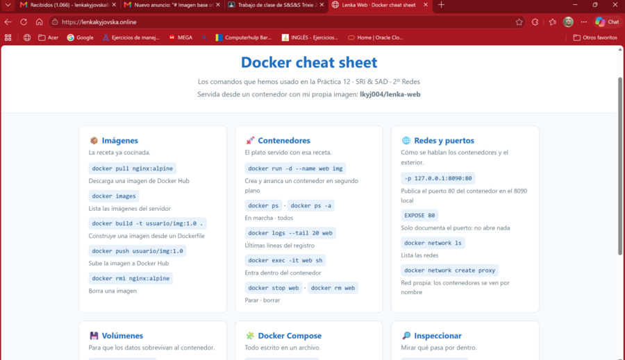

📦 La imagen lenka-web
Antes del LAMP hicimos una imagen más sencilla: una página web con nginx. Es el mejor ejemplo para entender el ciclo completo de Docker: escribir → construir → subir → desplegar.

🗺️ El recorrido
flowchart LR
A["index.html<br>la pagina"] --> B["Dockerfile<br>la receta"]
B -->|docker build| C["Imagen<br>lenka-web:1.2"]
C -->|docker push| D["Docker Hub"]
C -->|docker compose up| E["Contenedor<br>lenka-web"]
E --> F["Nginx Proxy Manager<br>HTTPS"]
F --> G["lenkakyjovska.online"]1. Cuenta en Docker Hub e imagen base
Docker Hub es como una tienda de aplicaciones, pero de imágenes: de ahí se descargan las que ya existen y ahí se suben las nuestras. Se crea una cuenta gratuita en https://hub.docker.com; el nombre de usuario (lkyj004) forma parte del nombre de la imagen: lkyj004/lenka-web.
Nuestro Dockerfile parte de una imagen que ya existe (nginx:alpine). No hace falta descargarla a mano: la línea FROM la baja de Docker Hub al hacer el build. Aun así, se puede hacer con:
docker pull nginx:alpine
docker images
No se modifica la imagen descargada
La nginx:alpine original queda intacta. Nuestro Dockerfile le añade capas y el resultado es otra imagen distinta: lkyj004/lenka-web.
2. El Dockerfile, línea a línea
FROM nginx:alpine
LABEL maintainer="Lenka Kyjovska" description="Web de la practica 12"
ENV TZ=Europe/Madrid
WORKDIR /usr/share/nginx/html
COPY index.html .
RUN echo "imagen construida el $(date)" > build-info.txt
# NUEVO en la 1.2: el QR apunta al repositorio de GitHub
ARG GITHUB_URL=https://github.com/lkyjovska/web-lenka
RUN apk add --no-cache libqrencode-tools \
&& qrencode -s 8 -m 2 -o qr.png "${GITHUB_URL}"
EXPOSE 80
HEALTHCHECK --interval=30s --timeout=5s CMD wget -q -O /dev/null http://localhost/ || exit 1
| Instrucción | Qué hace |
|---|---|
FROM nginx:alpine |
Imagen base: un Linux muy ligero con el servidor web nginx ya instalado |
LABEL |
Autor y descripción |
ENV TZ=Europe/Madrid |
La zona horaria del contenedor |
WORKDIR |
La carpeta que nginx publica como web |
COPY index.html . |
Copia nuestra página a la imagen |
RUN echo ... |
Ejecuta un comando al construir: escribe la fecha de construcción |
ARG + RUN apk add ... qrencode |
(1.2) Instala la herramienta de QR y crea qr.png apuntando a GitHub |
EXPOSE 80 |
Documenta el puerto (no abre nada) |
HEALTHCHECK |
Cada 30 s comprueba que la web responde |
FROM, WORKDIR, COPY y RUN crean capas (por eso docker build muestra «5/5» pasos en la 1.2). Las demás solo añaden información.
3. Construir y subir la imagen
docker build -t lkyj004/lenka-web:1.0 .
docker login -u lkyj004
docker push lkyj004/lenka-web:1.0
-t pone nombre y versión (usuario/nombre:etiqueta) y el punto final indica que el Dockerfile está en la carpeta actual. La contraseña de docker login se escribe a mano y no se muestra.
4. Desplegarla
services:
web:
image: lkyj004/lenka-web:1.2
container_name: lenka-web
restart: unless-stopped
networks:
- proxy
networks:
proxy:
external: true
docker compose up -d
En Nginx Proxy Manager, el host lenkakyjovska.online apunta a http://lenka-web:80 con certificado de Let's Encrypt. NPM encuentra el contenedor por su nombre porque están en la misma red (proxy).
5. Actualizar a la versión 1.1
Cuando cambia la página hay que construir una imagen nueva, subirla y recrear el contenedor.
Ojo
Un contenedor en marcha sigue usando la imagen con la que nació. Construir y subir la 1.1 no basta: hay que cambiar el compose y volver a hacer up.
cp index.html index.html.bak # copia de seguridad
docker build -t lkyj004/lenka-web:1.1 . # imagen nueva
docker push lkyj004/lenka-web:1.1 # subirla
sed -i 's#lenka-web:1.0#lenka-web:1.1#' docker-compose.yml
docker compose up -d # recrear el contenedor
docker inspect -f '{{.Name}} usa {{.Config.Image}}' lenka-web
Se recarga la página con Ctrl+F5 para no ver la copia en caché.
6. Versión 1.2: un QR que lleva a GitHub
La 1.2 añade al final de la web una tarjeta «Cómo se hizo esta imagen» con un QR. Al escanearlo con el móvil se abre el repositorio https://github.com/lkyjovska/web-lenka, donde está todo explicado.
flowchart TB
A["Dockerfile"] --> B["docker build<br>paso 5/5"]
B --> C["qrencode fabrica qr.png"]
C --> D[("Imagen lenka-web:1.2<br>con qr.png dentro")]
D --> E["Contenedor: nginx sirve la web"]
E --> F(["El móvil escanea el QR"]) --> G(["GitHub: lkyjovska/web-lenka"])La web solo muestra el QR
El QR lo crea docker build y nginx lo sirve como cualquier otro archivo. La página index.html solo lo muestra con <img src="qr.png">.
docker build -t lkyj004/lenka-web:1.2 .
docker push lkyj004/lenka-web:1.2
sed -i 's/lenka-web:1.1/lenka-web:1.2/' docker-compose.yml
docker compose up -d
docker logout # al terminar: Sauron olvida la sesión de Docker Hub
📂 Código y tutorial completo de esta imagen: github.com/lkyjovska/web-lenka.
EXPOSE frente a -p
EXPOSE solo documenta el puerto. Para abrirlo de verdad hay que publicarlo con -p. Detrás de NPM no hace falta publicar nada: llega por la red proxy.